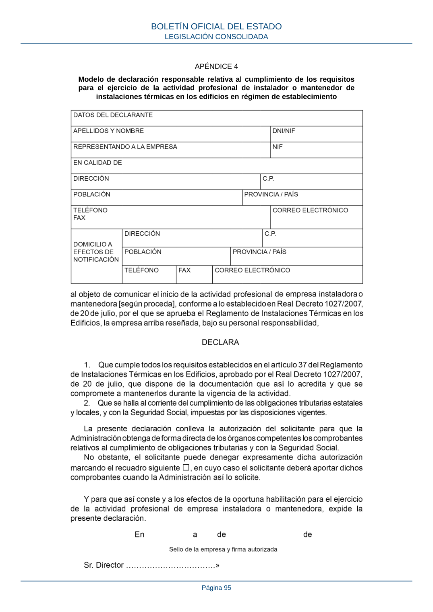

DB-HE2 RITE · edición 2022-08-02 · capa asociada
Documento RITE-asociada · SHA-256 del PDF ad1680c83bf4c7f5c656af1794c32ad0669ad9f36ac293737ff3f95177ff7b26
Página física 95 de 97.
Copia fiel del PDF fuente · Fuente oficial
Ficha de la disposición en la fuente oficial
Texto extraído y reorganizado: Basado en datos de la Agencia Estatal Boletín Oficial del Estado. PDF reproducido: Fuente de los datos: Agencia Estatal Boletín Oficial del Estado.
Formato: Texto de la página (Markdown)
APÉNDICE 4 Modelo de declaración responsable relativa al cumplimiento de los requisitos para el ejercicio de la actividad profesional de instalador o mantenedor de instalaciones térmicas en los edificios en régimen de establecimiento BOLETÍN OFICIAL DEL ESTADO LEGISLACIÓN CONSOLIDADA Página 95
